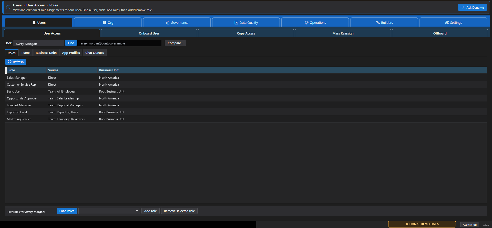

Access and role reporting
Browse users, teams, business units, and security roles. Report on users or teams assigned to a role and export the results.
Now available for Windows
Audit security roles, compare user access, trace effective privileges, find duplicate records, and manage team assignments from one native desktop app.
Version 2.3.3 is live. The Free tier is included; Pro is an optional upgrade sold separately.
Designed for administrators
Browse a user's direct roles, team memberships, business unit, app profiles, and chat queues without jumping between multiple admin pages.
Explore the Users manual →
Built for Dataverse administrators
Browse users, teams, business units, and security roles. Report on users or teams assigned to a role and export the results.
Use Duplicate Radar to investigate likely duplicates. Pro adds match profiles, side-by-side review, deliberate merging, and recurring scan schedules.
Trace effective access, compare roles and users, review risks, monitor changes, and produce evidence-friendly compliance reports.
Preview supported write operations, review the expected impact, and confirm changes. Undo is available for supported recent actions with retained recovery data.
Your data stays under your control
Dynamic Dynamo Kit runs on your Windows computer and connects directly to the environments you choose. It does not collect usage telemetry. Read the full Privacy Policy.
Documentation center
Install, connect your first environment, test access, and run a safe first report.
Start here →Feature-by-feature guidance, permissions, outputs, and safety notes for version 2.3.3.
Open the manual →Captioned walkthroughs, recording scripts, and practical administration articles.
Watch tutorials →Simple per-device licensing
Free forever
Core user, organization, reporting, settings, and Duplicate Radar workflows.
Two devices
$15 / month
Bulk operations, governance, insights, onboarding, offboarding, and duplicate merging.
$144 / year
All Pro features with two device activations and annual billing.
$59 / month
All Pro features with a shared pool of ten device activations.
A 14-day Pro trial is included with no credit card required. Pro purchases open the secure Lemon Squeezy checkout from inside the app. Microsoft does not process Pro purchases. See the Terms of Use.
Requirements
Independent software
Support is provided on a best-effort basis outside regular working hours, so response times can vary and immediate replies should not be expected. Licensing and installation problems are prioritized. Pro does not include an SLA.